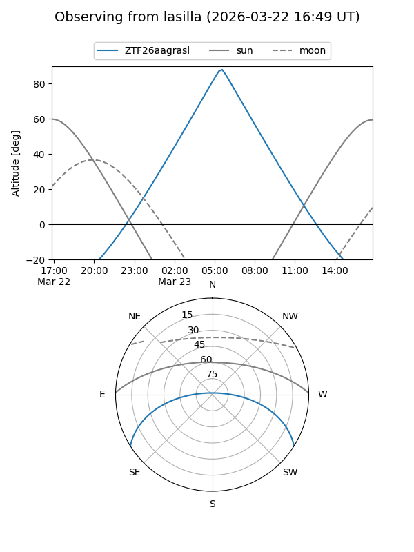
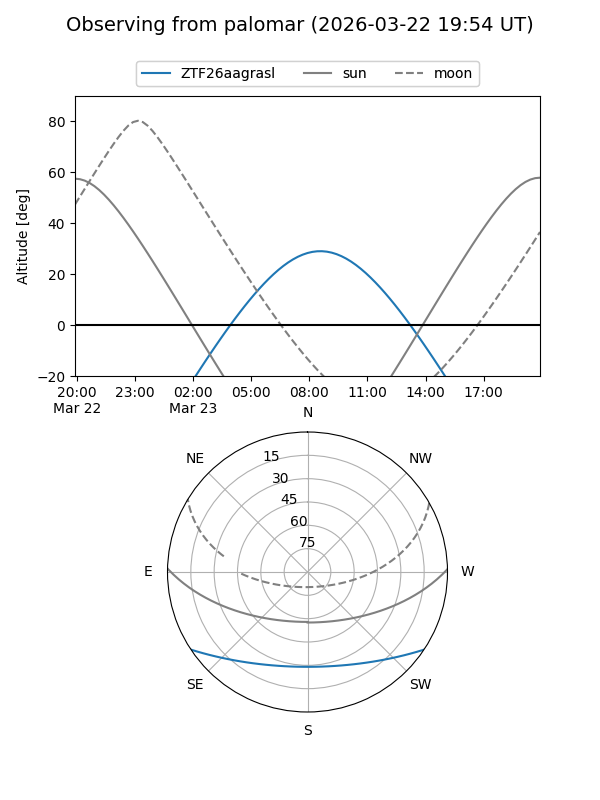

ZTF26aagrasl
Target ZTF26aagrasl at 2026-03-23 08:58
Aliases and brokers:
FINK: link
Lasair: link
ALeRCE: link
alt names
ZTF26aagrasl (ztf,fink_ztf)
Coordinates:
equatorial (ra, dec) = 192.1186,-27.46085
equatorial (HMS+DMS) = 12:48:28.47,-27:27:39.04
galactic (l, b) = (302.1254,+35.40626)
Flags:
Photometry:
last ztfg=20.05
1 ztfg detections
Lightcurve
Visibility


Additional plots